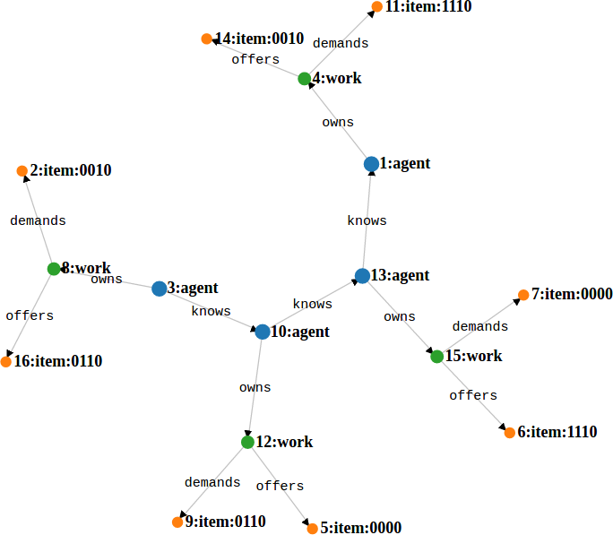
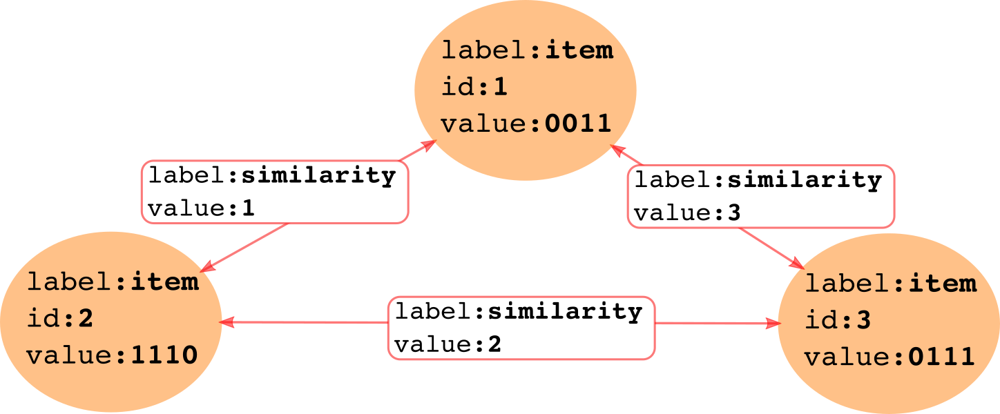

Chapter 3 Computational framework
The proposed Offer Networks simulation framework is based on (and is a special case of) the “open-ended computing” model, which combines two paradigms / computation models: Actor model of computation and Graph Computing Framework.
3.1 Actor model of computation
A decentralized and distributed system from the computational perspective can be best described by Actor model (Agha 1986), which was introduced in 1973 as a “universal modular formalism for artificial intelligence” (Hewitt, Bishop, and Steiger 1973). The model defines interaction among independent processes via message passing that does not require a global observer / algorithm / manager. It aims to model intelligence “ […] in terms of a society of communicating knowledge-based problem-solving experts. In turn each of the experts can be viewed as a society that can be further decomposed in the same way until the primitive actors of the system are reached”. It models “the nature of the communication mechanisms needed for effective problem-solving by a society of experts and the conventions of discourse that make this possible” and is aimed for developing a framework for “problem-solving involving parallel versus serial processing and centralization versus decentralization of control and information storage” (Hewitt 1976).
Over the years, actor model found its way into programming languages and paradigms, including, for example, functional programming. Also, there exists software frameworks and libraries dedicated to actor model (i.e. Akka, gpars, python/pulsar, etc.). These libraries allow for fast, yet scalable (across multiple machines) implementation of the actor model based logic.
Actor model allows for operationalization of the ‘open-ended intelligence’ (Weinbaum (Weaver) and Veitas 2017), (Weinbaum (Weaver) 2018) concept which perceives intelligence as a formative process of self-organization in which agents themselves get formed – as opposed to seeing intelligent agents which competencies are defined with respect to an a priori given problem domain or goal. Open-ended intelligence concept emphasizes onto-genesis of intelligent agents (in terms of their cognitive development) rather than their specific properties. Considering requirements / open problems / features related to implementation of Offer Networks (see Offer Networks: conceptual framework), the operationalization of aspects of Open-ended intelligence concept with the Actor model for building simulation modelling experiments seems to be a sensible path towards a scalable infrastructure for alternative economy.
Having said this one has to admit that Actor model (as well as the concept of Open-ended intelligence) is fairly abstract and does not define actual mechanisms of communications between actors and formation of their collectives able to solve complex tasks. The issue here is of course introducing the right set of constraints that will make the model more concrete without losing the essential characteristics which we would like to understand (see also the community discussion on the topic). For this a way to define logic of individual agent as well as communications between them is needed.
3.2 Graph computing framework
Graph computing is both a set of technologies and a way of thinking about the world in terms of graph data structures – entities connected via explicit or implicit links – and the processes working on them in terms of graph traversals (Rodriguez 2013). Very large graph data structures can be stored and processed on multiple machine clusters using modern open source or commercial distributed graph database technologies (e.g. Janusgraph, Neo4J, Azure Cosmos DB, Amazon Neptune, Data Stax Enterprise Graph, etc.).
Graph traversal is a process of visiting (checking, updating or modifying) vertices and links of a graph based on the user defined constraints (or grammar) (M. A. Rodriguez 2008) and is equivalent to ‘semantically constrained’ spreading activation, which can be regarded a general method of how associative networks (including brain) operate. Modern graph traversal engines (e.g. Apache TikerPop, currently used in the offernet) use vertex-centric programming model (also called “think like a vertex”), which implements user defined programs from the perspective of any vertex in a graph rather than the whole data structure (McCune, Weninger, and Madey 2015). This paradigm allows for implementation of decentralized model as well as other important features discussed in the Conceptual framework. Furthermore, both the paradigm and available technologies are massively scalable – allowing to process very large data structures without requiring to store/access them at once which (not incidentally) follows the conceptual approach to the world as a decentralized system – which cannot be properly modelled by assuming a global omniscient observer (see conceptual perspective of decentralized IT governance and (M. A. Rodriguez Marko 2008)).
3.3 Simulation engine
The final goal of the offernet project is to build the simulation engine for simulating rich and large scale Offer Networks experiments considering the general architecture as well as particular solutions of SingularityNET network. The long term goal is to integrate/assimilate offernet into SingularityNET core architecture as well as use lessons learned. Ideally the simulation engine could be used for general SingularityNET simulations.
The model of simulation engine consists of 4 layers (see figure 3.1). See also figure 2.1. Layer 4 is written in Java/Groovy/[Gremlin](https://en.wikipedia.org/wiki/Gremlin_(programming_language); layer 3 is Akka framework (Java); layer 2 is the DSE native graph API; and for layer 1 the Data Stax Enterprise Graph is currently used.

Figure 3.1: Simulation framework layers
Data Stax Enterprise Graph is a transactional database that can support thousands of concurrent connections and storing and querying graphs containing billions of vertices and edges, apart from being able to be distributed on multiple machines through Apache Cassandra (which is the backend of DSE graph) clusters. The network of items, rules of exchange and partially agents (see Conceptual framework and figure @ref{fig:architecture} are implemented as vertices and links in the graph. ON-AI agents access the graph and run distributed traversals using an Offer Network domain specific language written on Apache Tinkerpop’s Gremlin language’s (for now DSE java driver is chosen but could be other variant). ON-AI agents themselves will be implemented as sequential programs running on separate threads concurrently via Akka actors. In terms of scalability, Akka supports millions of actors and messages.
Availability of concurrent connections is important for implementing actor model where actors will access the Offer Network graph asynchronously in order to simulate the dynamics of a realistic economic network composed of many heterogeneous actors in SingularityNET. Massive scalability of graph databases will allow for large scale experiments with simpler ON-AI agent logic (or not so simple, depending on the availability of computational resources).
Furthermore, the model architecture would allow to run experiments with matching algorithms of (Goertzel 2017) on the same data structure and therefore potentially compare centralized search algorithms with decentralized search.
The simulation engine / architecture briefly described above allows to run decentralized or centralized algorithms on the same data structure of the Offer Network whether statically constructed or dynamically changing – thus providing rich experimentation space for testing and comparing different ideas and algorithms.
The best way to explain the model is in terms of data structures, objects and processes. See a semi-formal representation below.
3.3.1 Data structures and objects
- The structure is a list of vertexes and edges:
\[ON = \left\{ {V, E, \lambda, \mu} \right\}\]
where edges are directed (i.e. \(E \subset (V × V )\)), edges are labelled (i.e. \(\lambda : E \rightarrow \Sigma\)), and properties are a map from elements and keys to values (i.e. \(\mu : (V \cup E) × R \rightarrow S)\) {Rodriguez and Neubauer (2010)}.
- Vertexes can be of type ‘agent’, ‘work’ or ‘item’:
\[\begin{equation} \begin{aligned} \forall V ( & type(V,\text{agent})\\ & \lor type(V,\text{work})\\ & \lor type(V,\text{item})) \end{aligned} \end{equation}\]
Vertexes can be connected with edges, which define predicate relations between them: \[\begin{equation} \begin{aligned} \exists V1 \exists V2 \exists E & (connected(V1,E,V2) \\ & \Leftrightarrow \exists pred (pred(V1,V2) \land type(E,\text{pred}))) \end{aligned} \end{equation}\]
Edges can be of type ‘owns’, ‘offers’, ‘demands’ and ‘similar’ (which correspond to the possible predicate relations between vertexes):
\[\begin{equation} \begin{aligned} \forall E ( & type(E,\text{owns}) \\ & \lor type(E,\text{similar}) \\ & \lor type (E,\text{offers}) \\ & \lor type (E,\text{demands}) ) \end{aligned} \end{equation}\]
- Agents ‘own’ works:
\[\begin{equation} \begin{aligned} owns(V1,V2) :\Leftrightarrow & \forall V1 \forall V2 \forall E (type(V1,\text{agent}) \land type(V2,\text{work}) \\ & \land connected(V1,E,V2) \land type(E,\text{owns}) ) \end{aligned} \end{equation}\]
- A work ‘demands’ and/or ‘offers’ data:
\[\begin{equation} \begin{aligned} \textit{demands}(V1,V2) :\Leftrightarrow & \forall V1 \forall V2 \forall E (type(V1,\text{work}) \land type(V2,\text{data}) \\ & \land connected(V1,E,V2) \land type(E,\text{demands})) \end{aligned} \end{equation}\]
\[\begin{equation} \begin{aligned} \textit{offers}(V1,V2) :\Leftrightarrow & \forall V1 \forall V2 \forall E (type(V1,\text{work}) \land type(V2,\text{data}) \\ & \land connected(V1,E,V2) \land type(E,\text{offers})) \end{aligned} \end{equation}\]
\[\begin{equation} \begin{aligned} \forall V1 (type(V1,\text{work}) \, \exists V2 (demands(V1,V2) \lor \textit{offers}(V1,V2))) \end{aligned} \end{equation}\]
Another way to look at the same structure is that a ‘work’ is a ‘function’, taking inputs and converting them to outputs. In principle it can be a generic function as defined in mathematics, but in the context of offer networks the function does not do anything except exchanging input for the output. An agent, which ‘owns’ a ‘work’ could be understood as a sort of a ‘process’ which provides resources and intention behind exercising a function connected to it.
- Items can be connected with similarity relation:
\[\begin{equation} \begin{aligned} similar(V1,V2) :\Leftrightarrow & \forall V1 \forall V2 \forall E (type(V1,\text{data}) \land type(V2,\text{data}) \\ & \land connected(V1,E,V2) \land type(E,\text{similar})) \end{aligned} \end{equation}\]
\[\begin{equation} \begin{aligned} \forall E (type(E,\text{similar}) \Rightarrow \exists! value(E,\text{s})); s: \rm I\!R [0,1] \end{aligned} \end{equation}\]
3.3.2 Processes (Gremlin DSL pseudo-code)
Processes are graph traversals (written in Gremlin DSL) that run on separate threads of each agent. While the processes are concurrent and asynchronous, they nevertheless interact between each other by using the same data structure (OfferNet graph) in a stigmergic manner. Some of the processes are (full list will be available in the API documentation):
- findSimilar
def findSimilar() {
allOffersAndDemands.each {dataItem ->
dataItem.getProcess()
.getAgent()
.getNeighbours()
.getProcesses()
.getOffersAndDemands()
.calculateSimilarity(dataItem)
}
};- findCycles
def findCycles() {
allAgents.each { agent ->
agent.getProcesses()
.getOffersAndDemands()
.getHighestSimilarityLink()
.filter{link -> link.similarity > threshold}
.remember(traversals)
}
if (traversals.contain(cycle) == true) {
return cycle
}
};3.3.3 Expected dynamics (graphical depiction)
- Offer Network (toy) graph before running processes on it (i.e. similarities among items not calculated):

- After running processes and finding cycles:

- Similarity relation (based on Hamming distance):

3.4 Notes
- A graph database back-end is currently needed to enable the usage of graph traversal language for defining peer-to-peer communication rules among agents. In principle, however, it may be possible to implement Apache Tinkerpop OLTP graph computer directly on the chosen Actor framework (see Provider Documentation) or even on any code. In any case, implementing OLTP graph computer directly involves a considerable effort and therefore should be well backed by the results of initial experiments.
References
Agha, Gul A. 1986. Actors: A Model of Concurrent Computation in Distributed Systems. Mit Press.
Hewitt, Carl, Peter Bishop, and Richard Steiger. 1973. “A Universal Modular ACTOR Formalism for Artificial Intelligence.” In Proceedings of the 3rd International Joint Conference on Artificial Intelligence, 235–45. IJCAI’73. San Francisco, CA, USA: Morgan Kaufmann Publishers Inc. http://dl.acm.org/citation.cfm?id=1624775.1624804.
Hewitt, Carl. 1976. “Viewing Control Structures as Patterns of Passing Messages,” December. http://dspace.mit.edu/handle/1721.1/6272.
Weinbaum (Weaver), David, and Viktoras Veitas. 2017. “Open Ended Intelligence: The Individuation of Intelligent Agents.” Journal of Experimental & Theoretical Artificial Intelligence 29 (2): 371–96. https://doi.org/10.1080/0952813X.2016.1185748.
Weinbaum (Weaver), David R. 2018. “Open-Ended Intelligence.” PhD Thesis, Brussels: Vrije Universiteit Brussel. https://www.academia.edu/36140514/Open-Ended_Intelligence_-_PhD_Thesis.
Rodriguez, Marko. 2013. “On Graph Computing.” Marko A. Rodriguez. http://markorodriguez.com/2013/01/09/on-graph-computing/.
Rodriguez, Marko A. 2008. “Grammar-Based Random Walkers in Semantic Networks.” Knowledge-Based Systems 21 (7): 727–39. https://doi.org/10.1016/j.knosys.2008.03.030.
McCune, Robert Ryan, Tim Weninger, and Greg Madey. 2015. “Thinking Like a Vertex: A Survey of Vertex-Centric Frameworks for Large-Scale Distributed Graph Processing.” ACM Comput. Surv. 48 (2): 25:1–25:39. https://doi.org/10.1145/2818185.
Rodriguez, Marko A., Marko. 2008. “A Collectively Generated Model of the World.” In Collective Intelligence: Creating a Prosperous World at Peace, edited by Tom Atlee, Yochai Benkler, Thomas Homer-Dixon, Pierre Levy, Thomas Malone, Rt Hon Paul Martin, Hassan Masum, Robert Steele, and Mark Tovey, 1st edition. Oakton, Va.: Earth Intelligence Network.
Goertzel, Zar. 2017. “Offer Networks Simulation and Dynamics.” Master’s thesis, Copenhagen. https://github.com/zariuq/offer-network-thesis/blob/master/Thesis/Zar_Thesis_Offer_Networks.pdf.
Rodriguez, Marko A., and Peter Neubauer. 2010. “The Graph Traversal Pattern.” arXiv:1004.1001 [Cs], April. http://arxiv.org/abs/1004.1001.